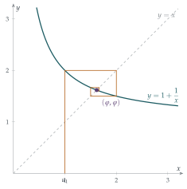

STEP II 2013、第6問
先に進む前に問題を読んでおこう。問題は STEP Support Programme の問題データベースにある： step.maths.org/questions/13-s2-q6
導入
次の式を書き、その値は何かを考えてみよう。 \[1 + \cfrac{1}{1 + \cfrac{1}{1 + \cfrac{1}{1 + \cdots}}}\] すぐに思いつく答えはこうである。これを \(x\) とおくと、最初の分数線の下の部分は再び \(x\) であるから \(x = 1 + 1/x\) となり、ここから \(x^2 = x + 1\)、そして \(x = \frac{1 + \sqrt5}{2}\)、すなわち黄金比（golden ratio）\(\varphi\) が得られる。
しかし、この議論は正しいのだろうか。この議論は、無限に続く式が何かを意味すること、つまり式を組み立てていく過程がただ一つの数に落ち着くことを前提としている。同じ手口を \(1 - 1 + 1 - 1 + \cdots\) に使うと（「これを \(S\) とおくと \(S = 1 - S\) だから \(S = \frac12\)」）、ばかげた結論が出てしまう。この問題は、この作業をきちんと行う方法を示している。そこで使うのは、極限を前もって知らずに収束（convergence）を証明するために STEP の受験者が持っている唯一の道具、すなわち単調数列（monotone sequence）である。
取りかかる前に
いくつかの項を計算してみよう。\(u_1 = 1\) とすると、 \[1,\quad 2,\quad \tfrac32,\quad \tfrac53,\quad \tfrac85,\quad \tfrac{13}{8},\quad \tfrac{21}{13},\quad \tfrac{34}{21},\quad \ldots\]
分子と分母に見覚えはないだろうか。また、小数で見てみよう：\(1, 2, 1.5, 1.667, 1.6, 1.625, 1.615, \ldots\)。この数列は増加しているだろうか。減少しているだろうか。
これらは連続するフィボナッチ数（Fibonacci numbers）の比である。この数列は増加でも減少でもない。行き過ぎたり足りなかったりを繰り返しながら、ジグザグに進む。したがって、与えられた定理は増加数列に関するものなので、数列全体には適用できない。しかし、奇数番目の項 \(1, 1.5, 1.6, 1.615, \ldots\) は増加し、偶数番目の項 \(2, 1.667, 1.625, \ldots\) は減少しているように見える。これがこの問題の方針である。
順を追って解く
段階 1 2 項離れた項を比べる
小問 (i) では、2 項離れた \(u_{n+2}\) と \(u_n\) を比べる。最初に自然に思いつくのは、\((*)\) を使ってそれぞれを一つ前の項で表すことである。
\((*)\) を 2 回使って、\(u_{n+2} - u_n\) を \(u_{n+1} - u_{n-1}\) で表し、さらに \(u_{n+1} - u_{n-1}\) を \(u_n - u_{n-2}\) で表せ。
\((*)\) より \[u_{n+2} - u_n = \frac{1}{u_{n+1}} - \frac{1}{u_{n-1}} = -\frac{u_{n+1} - u_{n-1}}{u_{n+1} u_{n-1}},\] であり、同様に \(u_{n+1} - u_{n-1} = -\dfrac{u_n - u_{n-2}}{u_n u_{n-2}}\) である。これらを合わせると、2 つの負号が打ち消し合って \[u_{n+2} - u_n = \frac{u_n - u_{n-2}}{u_{n+1} u_n \cdot u_{n-1} u_{n-2}}.\] 最後に、\((*)\) より \(u_{n+1} u_n = u_n + 1\) および \(u_{n-1} u_{n-2} = u_{n-2} + 1\) であるから、求める式が得られる。（\(u_{n-2}\) が存在するためには \(n \geq 3\) が必要である。）■
段階 2 落とし穴
すべての \(n\) について \(1 \leq u_n \leq 2\) であることを証明せよ。
\(u_1 = 1\) については成り立つ。\(1 \leq u_n \leq 2\) ならば \(\frac12 \leq \frac{1}{u_n} \leq 1\) であるから \(\frac32 \leq u_{n+1} \leq 2\) となり、これは確かに \(1\) と \(2\) の間にある。数学的帰納法（induction）により、すべての \(n\) について \(1 \leq u_n \leq 2\) である。■
特に、すべての \(u_n\) は正であるから、小問 (i) の分母 \((1 + u_n)(1 + u_{n-2})\) は正である。
段階 3 2 つの単調な部分列
小問 (i) の式は、\(u_{n+2} - u_n\) が \(u_n - u_{n-2}\) の正の定数倍であることを示している。このことから、\(u_3 - u_1\)、\(u_5 - u_3\)、\(u_7 - u_5\)、…の符号について何がわかるだろうか。
これらはすべて同じ符号である！ \(u_3 - u_1 = \frac32 - 1 > 0\) であるから、小問 (i) と数学的帰納法により \(u_5 > u_3\)、\(u_7 > u_5\) などが成り立つ。つまり奇数番目の項は増加する。これらは \(2\) で上に有界であるから、定理により極限（limit）に収束する。その極限を \(L\) とおく。
同様に \(u_4 - u_2 = \frac53 - 2 < 0\) であるから、偶数番目の項は減少する。これらは \(1\) で下に有界である。定理は増加数列について述べられているが、\(-u_2, -u_4, -u_6, \ldots\) は増加し \(-1\) で上に有界であるから収束し、したがって偶数番目の項も収束する。その極限を \(M\) とおく。
段階 4 極限を求める
\(L\) を求めるには、\(u_{n+2}\) と \(u_n\) を直接結びつける等式が必要である。\((*)\) からそれを導けるだろうか。
\((*)\) を 2 回適用すると \[u_{n+2} = 1 + \frac{1}{u_{n+1}} = 1 + \frac{1}{1 + 1/u_n} = 1 + \frac{u_n}{u_n + 1} = \frac{2u_n + 1}{u_n + 1}.\] 奇数の値をとりながら \(n \to \infty\) とすると、\(u_n\) も \(u_{n+2}\) も \(L\) に収束するから \[L = \frac{2L + 1}{L + 1} \quad\Longrightarrow\quad L^2 + L = 2L + 1 \quad\Longrightarrow\quad L^2 - L - 1 = 0.\] 解は \(\frac{1 \pm \sqrt5}{2}\) であり、\(L \geq 1\) であるから \(L = \frac{1 + \sqrt5}{2} = \varphi\) でなければならない。偶数の値についてまったく同じ議論を行うと、\(M = \varphi\) が得られる。
奇数番目の項は \(\varphi\) に収束し、偶数番目の項も \(\varphi\) に収束する。なぜこれで数列全体が \(\varphi\) に収束するといえるのだろうか。
直観的には、どの項も奇数番目か偶数番目のどちらかであり、どちらの種類の項も \(\varphi\) に近づいていくからである。厳密にいえば次のとおりである。任意の許容誤差 \(\varepsilon > 0\) が与えられたとき、奇数番目の項はある番号 \(N_1\) 以降で \(\varphi\) との差が \(\varepsilon\) 以内になり、偶数番目の項はある番号 \(N_2\) 以降でそうなる。したがって \(\max(N_1, N_2)\) 以降ではすべての項が \(\varphi\) との差 \(\varepsilon\) 以内にあり、これがまさに収束の意味である。（これは 第 2.1 節 で扱った「大きいほうのしきい値をとる」という手法である。）
段階 5 別の値から始める
\(u_1 = 3\) とすると、数列は \[3,\quad \tfrac43,\quad \tfrac74,\quad \tfrac{11}{7},\quad \tfrac{18}{11},\quad \tfrac{29}{18},\quad \ldots\] となる。このとき \(u_1 = 3\) は \([1, 2]\) の外にあるので、小問 (ii) の帰納法は出発できない。しかし \(u_2 = \frac43\) はその中にあるので、そこから帰納法が機能し、すべての \(n \geq 2\) について \(1 \leq u_n \leq 2\) となる。小問 (i) では \(u_{n-2}\) 以降の項しか使わず、それらが正であることしか必要としないが、実際にそれらはすべて正である。今回は \(u_3 - u_1 = \frac74 - 3 < 0\) かつ \(u_4 - u_2 = \frac{11}{7} - \frac43 > 0\) であるから、奇数番目の項は減少し、偶数番目の項は増加する。役割は入れ替わるが、それぞれの部分列（subsequence）はやはり単調かつ有界である。極限は同じ方程式を満たし、どちらも正であるから、どちらも \(\varphi\) である。結論は変わらない。■
振り返り
数列が単調でないときは、単調な部分を探せ。 奇数番目と偶数番目の項に分けることで、ジグザグの数列が性質のよい 2 つの数列になった。
まず収束を証明し、次に極限を求めよ。 等式 \(L = (2L+1)/(L+1)\) が正当なのは、\(L\) が存在するとわかってからである。導入での手早い議論が飛ばしていたのは、まさにこの段階である。
どちらの解かを確認せよ。 極限の方程式には解が 2 つあったが、小問 (ii) の評価によってどちらが正しいかがわかった。
背後にある数学
\(u_{n+1} = f(u_n)\) で定まる数列はどれも、蜘蛛の巣図（cobweb diagram）として描くことができる（図 2.2.1）。\(y = f(x)\) と \(y = x\) のグラフをかく。\(x\) 軸上の \(u_1\) から出発し、曲線まで垂直に進み（高さ \(u_2 = f(u_1)\)）、次に直線 \(y = x\) まで水平に進み（これで \(x = u_2\) に移る）、再び曲線まで垂直に進む、ということを繰り返す。ここで \(f(x) = 1 + 1/x\) は減少関数であり、そのために経路は、行き過ぎと不足を交互に繰り返しながら、曲線と直線の交点、すなわち \(f(\varphi) = \varphi\) となる不動点（fixed point）\(\varphi\) に向かって渦を巻くように内側へ進んでいく。

どれだけ速く、そしてなぜ
小問 (i) の因子 \((1 + u_n)(1 + u_{n-2})\) はどこから来るのだろうか。不動点の近くでは \(u_{n+1} - \varphi = f(u_n) - f(\varphi) \approx f'(\varphi)(u_n - \varphi)\) であり、\(f'(\varphi) = -1/\varphi^2 \approx -0.38\) である。したがって、1 ステップごとに誤差はおよそ \(-0.38\) 倍される。符号が反転し（ジグザグ）、大きさが縮む（収束）のである。2 ステップでは誤差は \(1/\varphi^4 \approx 0.146\) 倍され、これはまさに \(1/\bigl((1+u_n)(1+u_{n-2})\bigr)\) の極限である。大学ではこれが縮小写像定理（contraction mapping theorem）になる。不動点の近くで \(|f'| \leq k < 1\) ならば、反復はその不動点に収束し、誤差は少なくとも等比数列的に縮小する。これは数学で最も有用な定理の一つであり、微分方程式に解が存在することを証明するのにも使われる（第 8 章）。第 2.8 節 では、不動点が引きつける性質をもたない写像に出会い、まったく異なる結果を見ることになる。
最も無理な数
項 \(u_n = F_{n+1}/F_n\) は、その大きさの分数としては \(\varphi\) の最良の近似である。しかし「最良」といっても、あまりよい近似ではない。\(\varphi\) は、他のどの数よりも分数で近似しにくいのである。その理由は連分数（continued fraction）表示 \([1; 1, 1, 1, \ldots]\) に表れている。連分数に大きな数が現れると非常によい近似が得られる（\(\pi = [3; 7, 15, 1, 292, \ldots]\) と、優れた近似 \(\frac{355}{113}\) を思い出そう）が、\(\varphi\) はどこまでも可能な限り小さな数しか現れない。フルヴィッツ（Adolf Hurwitz）は 1891 年に、すべての無理数（irrational number）\(x\) に対して \(|x - p/q| < 1/(\sqrt5\, q^2)\) を満たす分数が無限に多く存在すること、そして \(\sqrt5\) はこれ以上改良できないことを証明した。改良できないのは、まさに \(\varphi\) があるためである。この「最大の無理性」こそが、ヒマワリの種の螺旋模様に黄金角が現れる理由である。
思考のスキル
極限を知らずに数列が収束することを示すには、単調かつ有界な数列を見つけるか、数列を単調かつ有界な部分に分けよ。
極限が存在するとわかって初めて、漸化式（recurrence relation）で「\(n \to \infty\) とする」ことによって極限を求めてよい。大学では、この定理は実数の完備性（completeness）、すなわち \(\mathbb{R}\) を \(\mathbb{Q}\) から区別する性質から導かれるものであり、公理からの証明を学ぶことになる。
次の一歩
内に潜むフィボナッチ数列。 \(F_1 = F_2 = 1\)、\(F_{n+1} = F_n + F_{n-1}\) とするとき、\(u_n = F_{n+1}/F_n\) であることを証明せよ。
誤差は縮む。 \(u_{n+1} - \varphi = -\dfrac{u_n - \varphi}{\varphi\, u_n}\) を示し、すべての \(n\) について \(|u_n - \varphi| \leq \varphi^{-(n-1)}\) であることを導け。（\(\varphi^2 = \varphi + 1\) および \(u_n \geq 1\) を用いよ。）
数列を途切れさせる。 \(u_1 = \frac{1 - \sqrt5}{2}\) ならば数列は定数であることを示せ。また、ある \(u_n = 0\) となって数列が続けられなくなるような初項 \(u_1\) の値をすべて求めよ。（ヒント：\(u_n = 0\) から逆にたどれ。）
\(\sqrt2\) の親戚。 \(v_1 = 1\)、\(v_{n+1} = 1 + \dfrac{1}{1 + v_n}\) とする。この問題の方法を応用して \(v_n \to \sqrt2\) を示し、\(\sqrt2\) を連分数で表せ。
さらに学ぶために
Mario Livio, The Golden Ratio (Broadway)。\(\varphi\) の歴史を、本物の数学と数多くの俗説とを区別しながら描いている。
C. D. Olds, Continued Fractions (Mathematical Association of America)。優秀な高校生向けに書かれた、短くて非常に読みやすい入門書。
J. C. Burkill, A First Course in Mathematical Analysis (Cambridge University Press)。単調数列と完備性を厳密に扱っており、演習問題も豊富である。